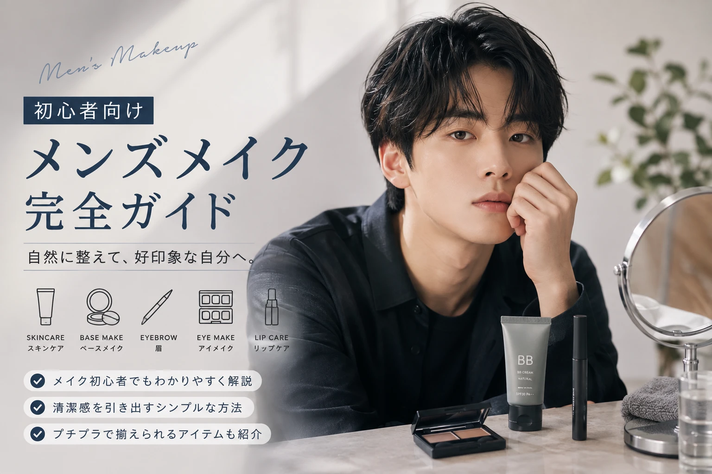

メンズメイクは
難しくない。
メンズメイクで大切なのは、 最初からたくさんのコスメを使うことではありません。
肌を整えて、眉を整えて、 気になる部分を少しカバーする。 まずはこのくらいから始めてみましょう。
まずは
肌を整える
メイク前は洗顔や保湿をして、 肌を整えておきましょう。
メイク前の基本
- 洗顔
- 保湿
- 肌になじむまで少し待つ
ベースメイクは
薄く自然に
肌全体を厚く塗るより、 気になる部分を少しずつ整えるイメージがおすすめです。
下地
肌を整えるように薄く塗ります。
ファンデーション
必要な部分だけ薄く使います。
コンシーラー
ニキビ跡やクマなど気になる部分をカバーします。
一番変化を感じやすいのが
眉
眉の形を整えるだけでも、 顔全体の印象は変わります。
初心者のポイント
- 眉の長さを整える
- 眉下の余分な毛を整える
- 足りない部分だけ描く
アイメイクは
最初は控えめに
メンズメイク初心者なら、 アイシャドウやアイラインを濃くしすぎないことがポイントです。
「メイクしている感」よりも、 目元が少し整って見える程度から試してみましょう。
リップは
血色感を意識
色をしっかりつけるのが苦手なら、 自然な色味のリップから始めてみましょう。
色付きリップ
自然な血色感を出しやすい。
リップクリーム
まずは唇の乾燥ケアから。
「やりすぎない」が
メンズメイクのコツ
初心者のうちは、 少量ずつ使って足りなければ重ねるのがおすすめです。
自然に見せるポイント
- 厚塗りしない
- 色を使いすぎない
- 境目をしっかりぼかす
- 明るい場所で仕上がりを確認する
最初に揃えるなら
このくらい
コンシーラー
気になる部分をカバー。
アイブロウ
眉を整えるための基本アイテム。
リップ
唇の乾燥ケアと血色感に。
メンズコスメも
プチプラから試せる
初めてメイクをするなら、 いきなりたくさん買う必要はありません。
まずは必要なアイテムを少しずつ揃えて、 自分に合うものを探してみましょう。
プチプラコスメを見る
メイク後に
チェック
ベースが厚くなっていない？
眉が濃すぎない？
左右のバランスは自然？
明るい場所でも自然に見える？
メンズメイクの
よくある質問
メンズメイク初心者は何から始める？
まずはスキンケアと眉を整えることから。 その後、コンシーラーやリップなどを少しずつ試すと始めやすいです。
ファンデーションは必要？
必ず使う必要はありません。 肌の気になる部分だけをコンシーラーで整える方法もあります。
メイクしているのがバレたくない場合は？
厚塗りを避けて、 肌・眉・唇などを少しずつ整えると自然な仕上がりを目指せます。
メンズメイクは
少しずつでいい。
最初から完璧なメイクをする必要はありません。
肌を整える。 眉を整える。 気になる部分をカバーする。
まずはこの3つから始めて、 慣れてきたらアイメイクやリップにも挑戦してみましょう。
少ない予算で、
最大限かわいく。
メンズ美容も、 自分らしく楽しもう。